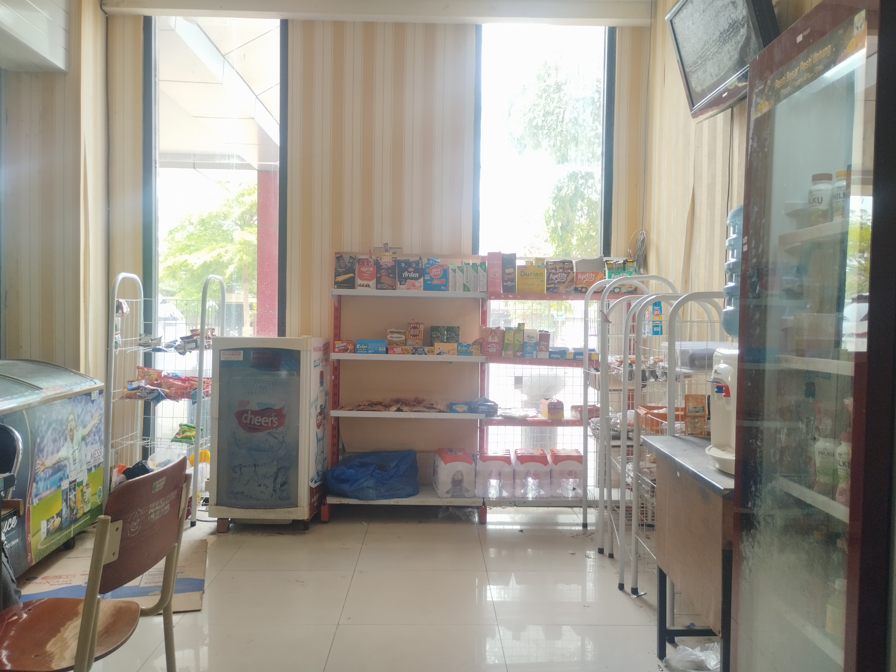

Pilih Makanan Dan Minuman Favoritmu Dari Katalog
Lihat Katalog
Kantin POTI JTI (Jurusan Teknologi Informasi - Politeknik Negeri Jember) adalah sarana pelayanan kantin kampus sekaligus laboratorium praktikum bisnis yang dikelola langsung oleh Pengurus HMJ TI Divisi Kewirausahaan (KWU)
Kantin POTI didirikan sebagai sarana pembelajaran langsung (learning by doing) bagi mahasiswa Pengurus HMJ TI dalam mengelola operasional usaha, kasir, manajemen stok, dan pelayanan publik
Jajanan tidak ditemukan.